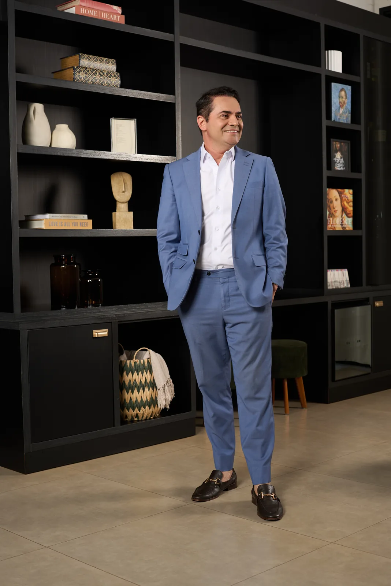
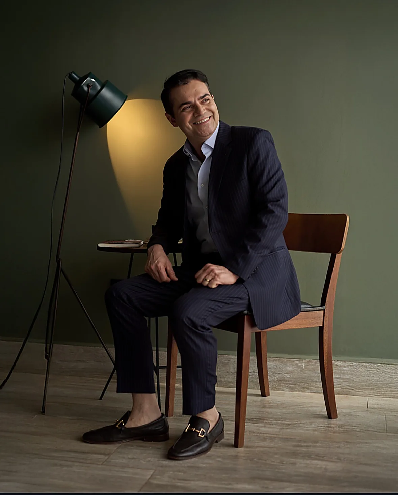
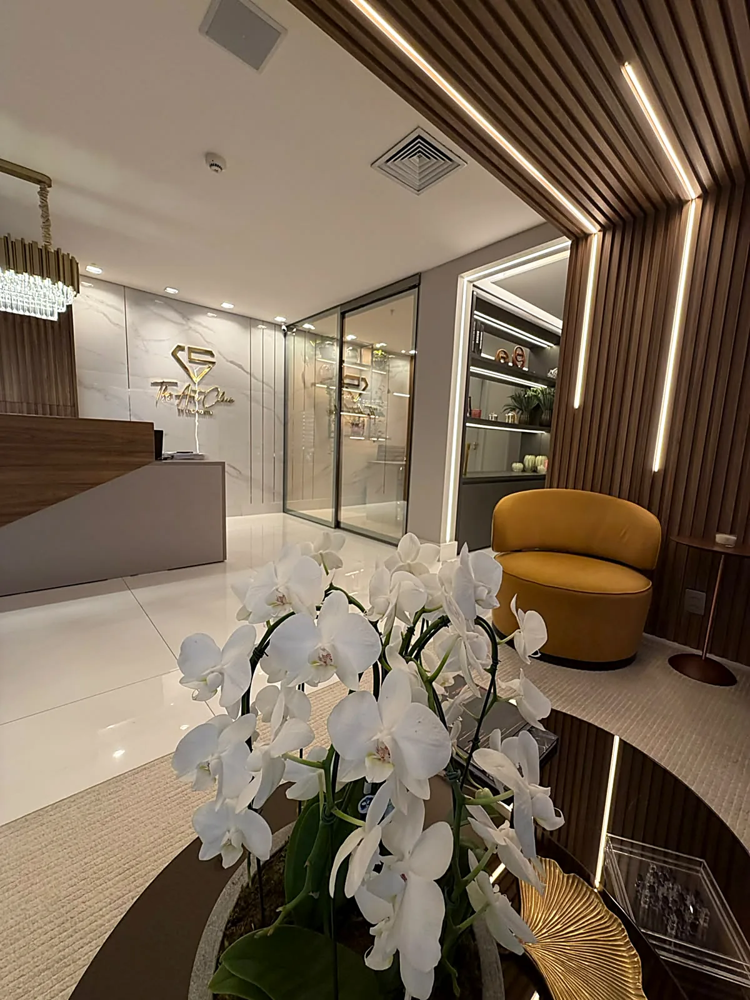
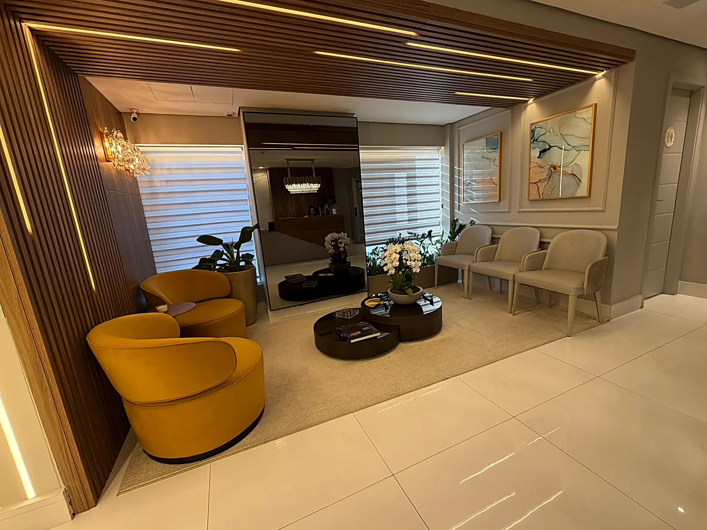
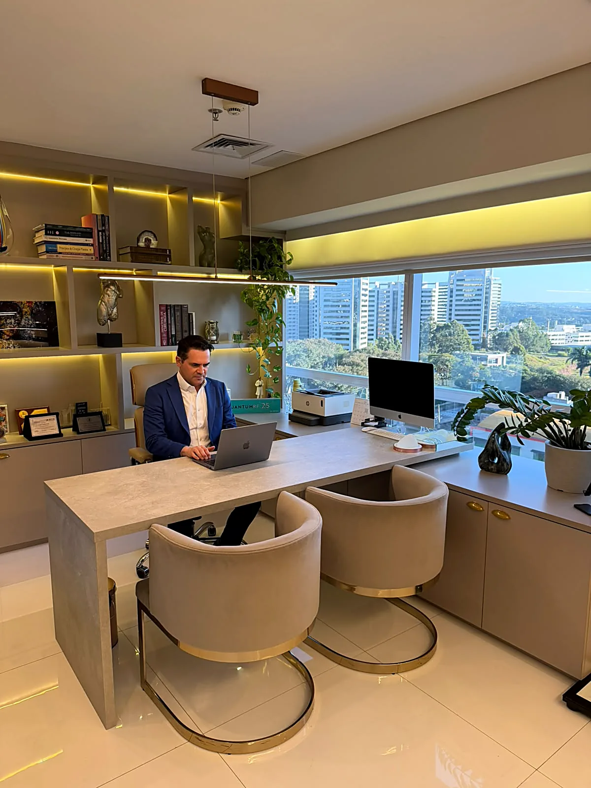
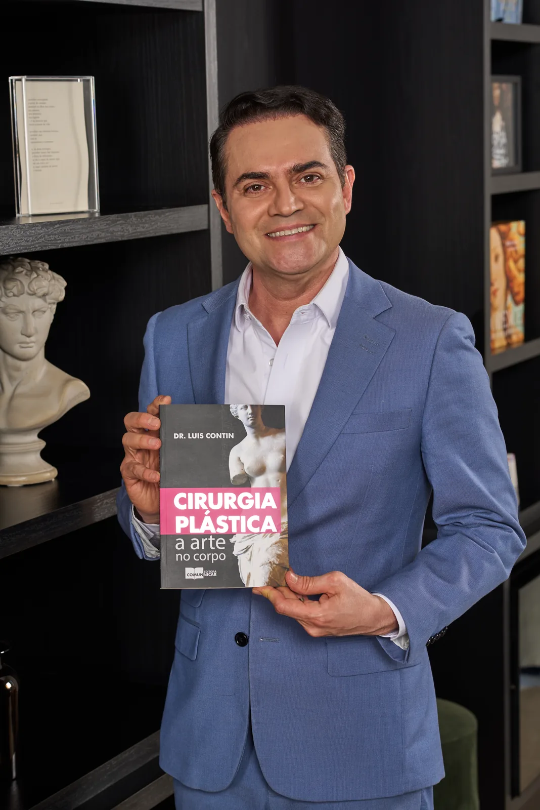

Cirurgia Plástica · Alphaville, São Paulo
Dr. Luis Contin dedica-se à cirurgia plástica de alta precisão, com especialização em LipoHD. Todas as cirurgias são realizadas exclusivamente em ambiente hospitalar.
Precisão técnica · Sensibilidade estética
Cada procedimento é planejado individualmente, respeitando a anatomia, a proporção e a naturalidade de cada corpo.


São Paulo · Alphaville
Cirurgião plástico com formação no Brasil e no exterior, o Dr. Luis Contin construiu sua trajetória unindo rigor técnico e olhar estético, com a convicção de que segurança e naturalidade caminham juntas.
Membro titular da Sociedade Brasileira de Cirurgia Plástica, dedica-se à cirurgia do corpo e da face, com atuação nos principais hospitais de São Paulo.
Alameda Grajaú, 98 · Alphaville
Um espaço projetado para acolher: consultas, avaliações e acompanhamento pós-operatório em ambiente reservado, a minutos do Hospital Albert Einstein, Unidade Alphaville.



O ambiente
Um espaço pensado para o conforto e a discrição de cada paciente, do primeiro contato ao acompanhamento.
Procedimentos
Cada plano cirúrgico é construído a partir da anatomia, do histórico médico e das expectativas de cada paciente. A indicação começa sempre pela avaliação individual, com as cirurgias realizadas em ambiente hospitalar.
Todo procedimento possui indicações, contraindicações, período de recuperação e riscos, detalhadamente esclarecidos em consulta. Os resultados variam de pessoa para pessoa.
Livro
As maiores dúvidas sobre cirurgia plástica, respondidas com clareza, antes de qualquer decisão.
Em "Cirurgia Plástica — A Arte no Corpo", o Dr. Luis Contin responde de forma clara e concisa às dúvidas mais frequentes sobre os diversos tipos de cirurgia plástica, um compromisso com a informação de qualidade e a decisão consciente do paciente.
FALTA · link de compra ou download do livro
Consultas em Alphaville
A avaliação individual é o primeiro passo de qualquer procedimento. Agende diretamente pelo WhatsApp com a equipe da clínica.
Agendar pelo WhatsApp